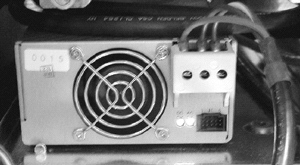
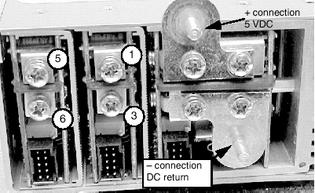
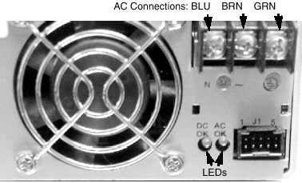

Operating Documentation
Direction 5114043-800, Rev# 9
LightSpeed 3.X Service Methods (Advanced)
Operating Documentation |
For an H3 Console, the VME power supply is located in the lower right corner of the console (behind the EMC cover).
Illustration 1: ASTEC Power Supply

Table 1: Power Supply Terminal Identification
| TERMINAL | # OF WIRES | WIRE COLOR |
|---|---|---|
| + 5 VDC | 2 | 1 lg black & 1 brown |
| 5 VDC return | 2 | 1 lg black & 1 blue |
| 1 (+) | 2 | red |
| 3 (-) | 2 | black |
| 5 (+) | 3 | green |
| 6 (-) | 3 | white |
Illustration 2: Power Supply Terminals

| NOTE: | Verify leads and colors on your console power supply before removing them from the existing Power One supply. |
Table 2: AC Connections for VME power supply
| TERMINAL | COLOR | # WIRES |
|---|---|---|
| N | BLUE | 1 |
| ~ | BROWN | 1 |
| GND | GREEN | 1 |
Illustration 3: Front view of VME power supply
